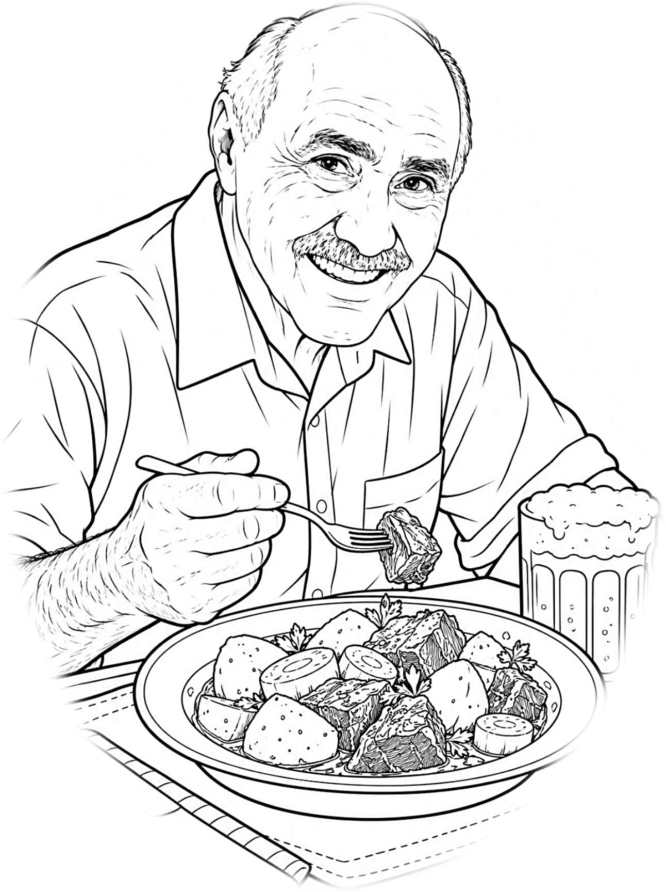

Carne de Panela na Cerveja Preta com Batatas
E adivinha? A cervejinha não podia faltar para o seu José Arnaldo Gomes!
Toda família tem um gosto que tem dono. Na família de Zelinda, esse gosto tinha nome e sobrenome, José Arnaldo Gomes, e vinha bem gelado, num copo de cerveja.

Seu José Arnaldo gostava de uma cervejinha. Não era segredo para ninguém, e ele nunca fez questão de esconder. Gostava dela na roda de conversa, no dia de jogo, na mesa do almoço de domingo. A cervejinha era companhia, era pausa, era o jeito dele de dizer que o dia tinha valido a pena.
Zelinda sabia disso como sabia de todas as coisas que importavam. E foi assim que a cerveja, que tanto o alegrava no copo, encontrou lugar também na panela.
Ali, ela ganhava outra função. Misturada ao molho de tomate e aos temperos, formava um caldo escuro, encorpado, com uma nota levemente adocicada. A carne, cozida devagar na pressão, ficava macia e suculenta; as batatas bebiam o molho até ficarem com o sabor de tudo. Quando a panela se abria, o aroma tomava conta da cozinha e avisava que vinha coisa boa por aí.
Era a receita preferida de quem sempre amou uma cerveja e que, só nela, aceitava dividi-la com a panela.
Dia de carne de panela era dia de alegria completa: a cervejinha gelada no copo, a carne fumegando no prato e um pedaço de pão para aproveitar o caldo até a última colherada. Era prato de sustância, daqueles que combinam com mesa cheia e conversa comprida. Seu José Arnaldo saboreava cada garfada sem pressa, como quem sabe que uma comida assim não se come: se agradece.
Porque aquela carne não era feita só de ingredientes. Era feita pelas mãos de Zelinda, para o homem que ela escolheu em 1958, com o cuidado de quem conhece de cor o gosto do outro. Na cozinha dela, cada receita tinha um ingrediente secreto. Nesta, ele tinha nome: o amor pelo seu José Arnaldo e pela família que os dois construíram juntos.
Hoje, o lugar dele à mesa ficou mais quieto. Mas toda vez que essa panela vai ao fogo, alguém se lembra. Do copo gelado, da conversa sem hora para acabar, do prato limpo até o fim.
É assim que uma família guarda quem ama: também pelo sabor. Algumas lembranças não ficam nos álbuns. Ficam numa comida preparada exatamente como gostava a pessoa de quem sentimos saudade.
Se for fazer, faça como ele merece: com a mesa cheia, sem pressa e com uma cervejinha bem gelada ao lado.